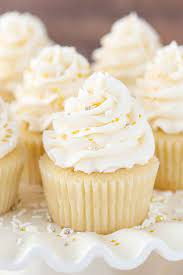

Shortbread

Description
White cake cupcakes are soft, delicate cupcakes that are surprisingly simple to make from scratch. These light, tender, and moist cupcakes are perfect for events such as weddings and birthdays.
Ingredients
- 1 cup white sugar
- 1/2 cup unsalted butter
- 2 large eggs
- 2 teaspoons vanilla extract
- 1 1/2 cups all-purpose flour
- 1 3/4 teaspoons baking powder
- 1/2 cup milk
Steps
- Preheat the oven to 350 degrees F (175 degrees C). Grease and flour a 9-inch square cake pan.
- Cream sugar and butter together in a mixing bowl. Add eggs, one at a time, beating briefly after each addition. Stir in vanilla.
- Combine flour and baking powder in a separate bowl. Add to the wet ingredients and mix well. Add milk and stir until smooth. Pour batter into the prepared cake pan.
- Bake in the preheated oven until the top springs back when lightly touched, 30 to 40 minutes.